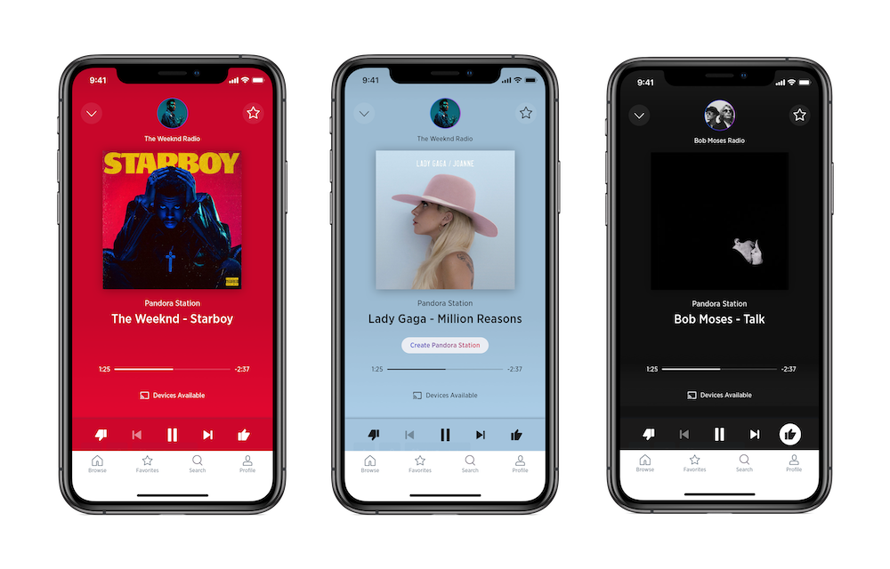

SiriusXM Pandora Stations

Towards the end of 2018 SiriusXM had acquired Pandora Media. We began
to look for opportunities to cross integrate both of our services. This
project spanned four months from research to launch.
My Role: Product Design Lead
Launched: May 2019
Looking for overlap
–
I worked closely with cross functional partners from both Pandora
and SiriusXM.
Key discovery insights
–
Majority of SiriusXM subscribers enjoy the serendipitous nature of radio, they are more
interested in discovery than curation.
Approximately 70% of SiriusXM subscribers had used Pandora in the last year.
Users wanted to be able to listen to more music by or similar to what they are hearing on the radio.
Goal
–
Provide users with a more personalized music discovery experience.
Leverage Pandora’s technology and promote the brand.
Solution
–
Integrating one of Pandora's core features “Artist Radio” made sense because our users
are already accustomed to and enjoy the serendipitous nature of radio. This allowed them
to dive into music from or similar to a specific artist right from listening to radio. And
for the first time this gave the user more control over what they were listening to, which we
felt would be very valuable in driving more user engagement.
Constraints
–
• The feature had to be branded with the Pandora logo or naming.
• Users could only create 250 artist radio stations.
• When an artist station is created for the first time it is instantly created.
• This feature had to fit seamlessly within the existing SiriusXM experience.
• The feature had to be able to scale for future added functionality.